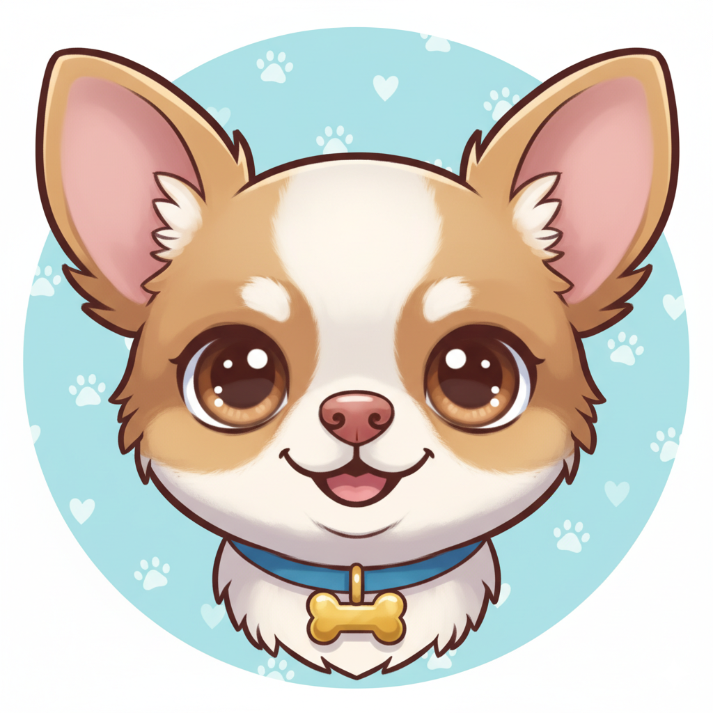

首頁
瀏覽直播
儲值中心
開始直播
聯絡我們
首頁
開始直播
觀看直播
聯絡我們
免費
100幣
500幣
1000幣
📺 等待主播開始直播
主播上線後，直播畫面會自動顯示在這裡
點擊開始觀看

等待直播中...
等待精彩直播...
等待直播中
0
觀看
切換主播
瀏覽所有
💬 即時聊天室
👥
0
×
儲值中心
選擇儲值金額
100 幣
NT$ 30
500 幣
NT$ 150
1000 幣
NT$ 300
3000 幣
NT$ 900
確認儲值